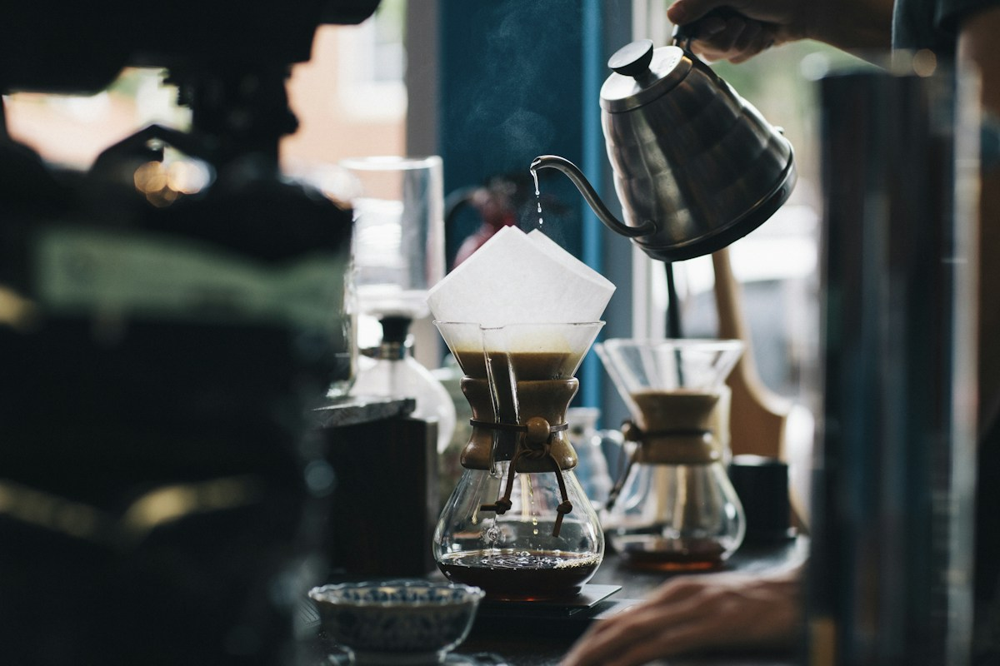
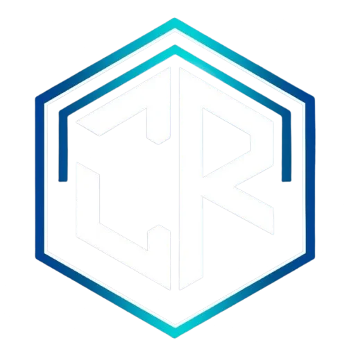
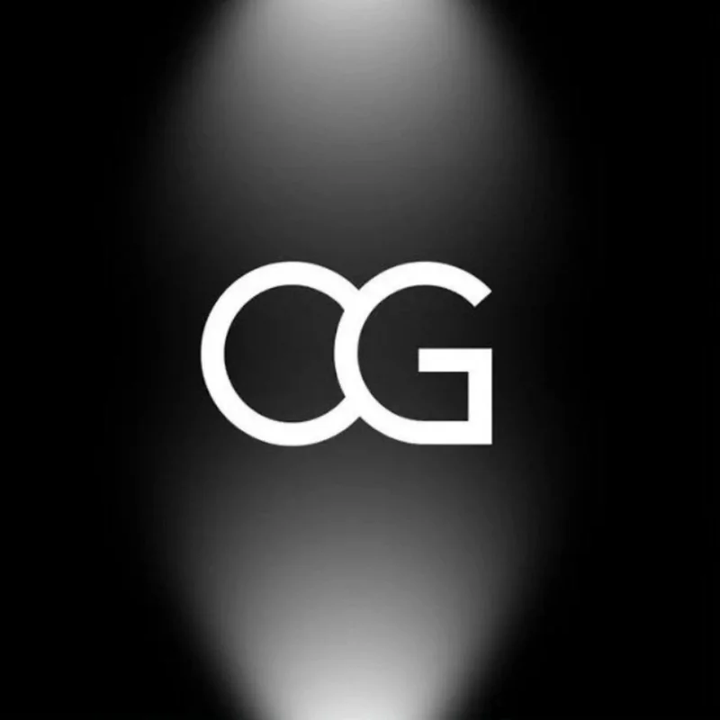
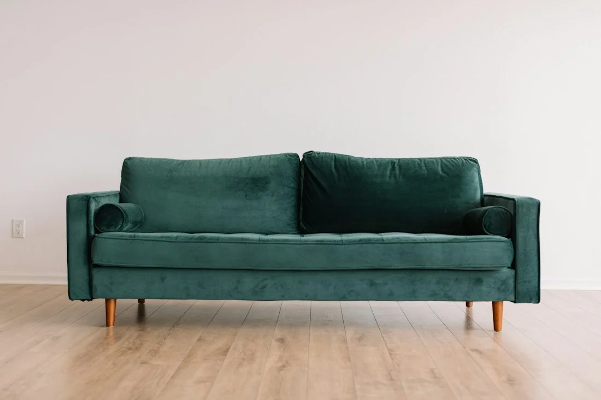
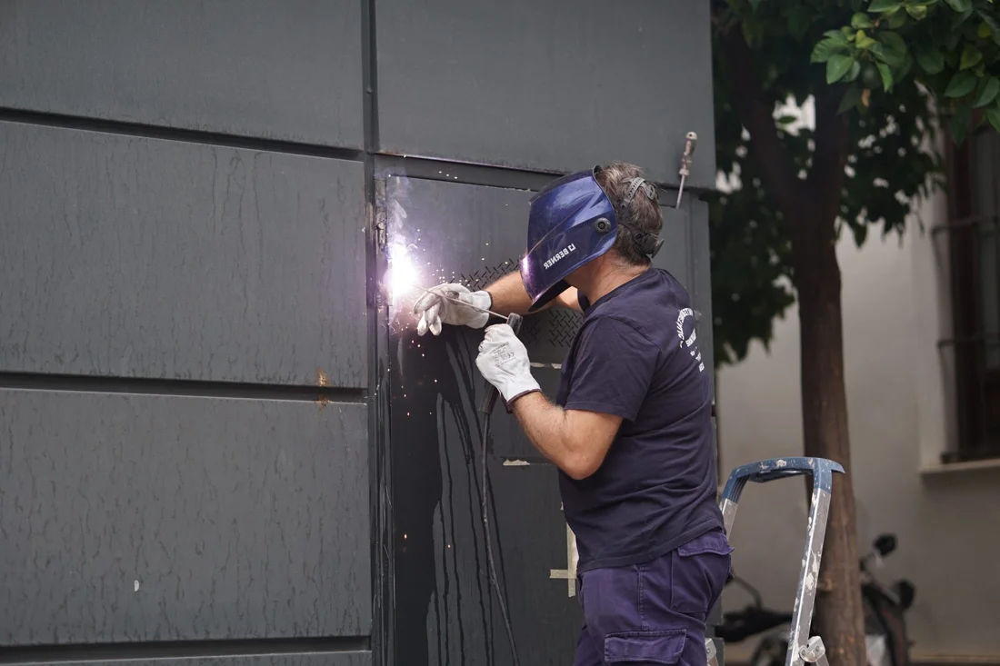

DISCOVER
Start with your business.
Your audience, goals, existing tools, and constraints. We start by understanding what a useful next step looks like.

Good businesses deserve more than another website.
Thoughtful design. Practical systems. Room to grow.
From crypto communities to furniture retail and industrial services. Explore four client projects, each with its own story and visual direction.

A community website bringing signals, market context, and a clear path to its Telegram community together.
Visit live website (opens in a new tab)
A digital home for a crypto trading community, with its programs, research, and membership information in one place.
Visit live website (opens in a new tab)
A furniture storefront for discovering products and exploring the collection online.
Visit live website (opens in a new tab)

INDUSTRY.A company website presenting HVACR, engineering, industrial automation, and maintenance services.
Visit live website (opens in a new tab)Project previews use brand imagery from the linked websites. Open a project to explore the live experience.
We bring thoughtful design and practical technology together. For the local business building its first website, the growing team connecting its tools, and the founder deciding what comes next.
Find your starting pointA beautiful website is a starting point. Clear strategy, connected tools, and search foundations help the rest of your business move with it.
Business websites, landing pages, and redesigns with thoughtful visuals, clear content, and an easy path to an inquiry.
Services today. New possibilities ahead.
Reusable software, AI-assisted tools, and productized automation are planned directions. Meta Ads and deeper analytics are future options.
A café shouldn’t feel like a consulting firm. A florist shouldn’t look like everyone else.
Illustrative concepts — not delivered client projects.Warm colours, generous photography, and a little character. An online home that feels like walking into your favourite café.
Your website, profiles, and business information shape how people understand you. We connect those touchpoints so your online presence feels clear, credible, and unmistakably yours.
We offer quality interior design services.
Home | About | Services
Illustrative transformation · not a client project
You bring the business.
We help shape the digital next step.
Your audience, goals, existing tools, and constraints. We start by understanding what a useful next step looks like.
We agree on scope, deliverables, dependencies, and ways to assess the work before creating the solution.
Design, development, or workflow configuration — shaped around the plan and reviewed with you.
We validate the agreed solution, resolve issues, and complete the handover so you can use it with confidence.
Review the outcome and explore further support where contracted. Ongoing care and subscriptions are scoped separately.
Yes. We help Indonesian SMEs and founders clarify their digital starting point, organise content, and build a professional website. Bring your goals and whatever materials you already have.
We’ll look at what works and where the experience falls short. That might lead to a focused refresh or a complete redesign, depending on your goals.
It depends on the pages, content, and features you need. We agree on the scope, price, and timeline before starting. Your project brief helps us understand what to quote.
Absolutely. We design for smaller screens as carefully as larger ones, with clear navigation, readable content, and touch-friendly interactions.
We can scope workflows such as inquiry capture, form routing, customer record updates, and routine notifications. Tools, integrations, third-party costs, and support are agreed per engagement.
We work on technical and on-page search foundations, metadata, page structure, and visibility planning. Rankings, traffic, leads, and revenue are not guaranteed.
Meta ads and campaign support are planned optional services. Our initial offering covers websites, digital presence, strategy, business automation, and foundational SEO.
Your business. Your next step.
Let’s give it a clear direction.